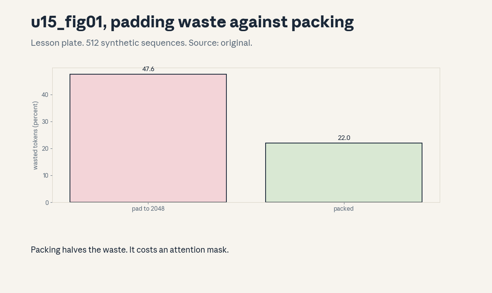
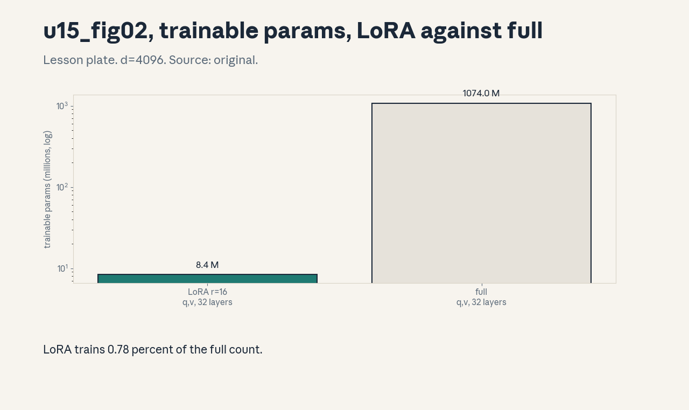
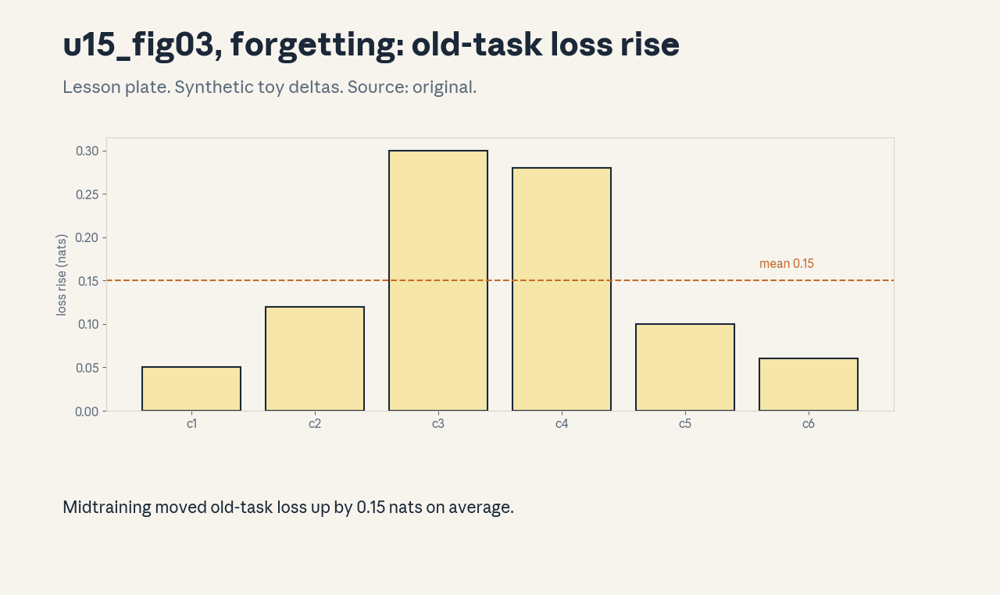

U15 · Midtraining and supervised adaptation
U15 , Midtraining and supervised adaptation
Prerequisites: P11, P13, P14. Bridge links in ../prerequisites.md.
Session: S14 second half (reported May 13, Data: Mixing, Rewriting,
SFT). The mixing half maps to U14, the split is a teaching decision
stated here. Full map in ../course_map.md.
Claim class: REQUESTED-BRANCH. All leaves PLANNED / SOURCE ATTRIBUTION
PENDING. Notation: see ../notation_and_shapes.md.
Standing note
No model was trained on this box. Adaptation claims are arithmetic
and numpy simulations from assets/compute_u15.py (executed
2026-10-06), stated as such. Loss deltas are synthetic toys, not
measured training results.
Russian-doll map
Shells 0-1 in items 1-2, shells 2-3 in items 3-6, shell 4 in item 7, shell 5 in item 8, shell 6 in item 9, shell 7 in item 11, shell 8 in item 10, shell 9 in item 12, shell 10 in item 13(c). The depth gate is checked by item 13.
Local remediation , what SFT optimizes
Read this if diagnostic items on masking were not full marks.
Supervised fine-tuning trains on (prompt, response) pairs but
computes loss only on the response tokens. Toy from
compute_u15.py: in synthetic conversations, system 0.17, user
0.34, assistant 0.49 of tokens, per 1M tokens, 492,356 carry
supervision. The model learns to produce responses, not to predict
prompts. Assessment: a batch has 2M tokens with the toy fractions.
How many supervised tokens? Key: ../keys/u15_answers.md R1.
C01: Pre/mid/post-training boundaries
Leaf id cs336-U15-C01. Claim class REQUESTED-BRANCH.
Status PLANNED / SOURCE ATTRIBUTION PENDING.
-
Source mapping, scope, objectives, dependencies. Branch. Scope: the three stages and what each changes. Objectives: place midtraining between pretraining and post-training, name its job. Depends on P11, P13.
-
Motivating question and toy. Question: the base model is done, but it needs longer context and new data. Is that post-training? Midtraining: continued pretraining on a new data mix (often longer context, new domains) with the pretraining objective, before any instruction tuning.
-
Mental model. Pretraining builds the base. Midtraining adapts the base: new context length, new knowledge cutoff, new domains. Post-training (SFT, RL) teaches behavior. Different objectives, different data, different evals.
-
Objects, symbols, units, shapes, assumptions. Stage boundaries by objective and data. Assumption: the standard three-stage vocabulary.
-
Derivation / mechanism. No derivation, it is a taxonomy. The objective function and the data mix define the stage, not the calendar date.
-
Computed example. Toy ledger: pretrain 5.88e21 FLOPs, midtrain 10% more on long-context data, SFT 1% on instructions. The FLOP ratios mark the stages.
-
Algorithm and reference implementation. A stage checklist: objective, data, evals. Text.
-
Correctness checks and expected output. Each stage has a distinct eval suite that moves.
-
Costs. Blurred boundaries (SFT data in midtraining) make ablations uninterpretable.
-
Nearest alternative and selection boundary. Skip midtraining (fine when the base already fits). Add it for context extension or domain shifts.
-
Failure case and counterexample. Midtraining on narrow data with the full pretraining LR: the model forgets the broad distribution (C10). The assumption “more training only helps” breaks, lower the LR and mix in base data.
-
Research reading and falsifiable extension. Reading: the midtraining reports (secondary). Extension: define stage membership for 6 toy runs by objective, hypothesis: the taxonomy classifies all six.
-
Assessment. (a) Recall: the three stages. (b) Oral ladder: define each, place the toy, justify the objective criterion, write the checklist, compare skip with add, debug the forgetting case, critique the taxonomy, design the classification test. (c) Transfer: a run uses instruction data with the LM objective. Which stage? Answers:
../keys/u15_answers.mdA1. -
Lab and exercises. Lab U15 task 1 classifies stages. See
../labs/u15_lab.md. -
Visuals. No dedicated figure. No unresolved conflict.
C02: Long-context adaptation
Leaf id cs336-U15-C02. Claim class REQUESTED-BRANCH.
Status PLANNED / SOURCE ATTRIBUTION PENDING.
-
Source mapping, scope, objectives, dependencies. Branch. Scope: extending context length after pretraining. Objectives: state the RoPE theta change, compute the wavelength shift. Depends on C01, U03-C10.
-
Motivating question and toy. Question: the model was trained at 4k context, you need 128k. What changes? Toy from
compute_u15.py: RoPE theta 1e4 -> 5e5 moves the slowest wavelength from 6.28e4 to 3.14e6, ratio 50x. -
Mental model. RoPE encodes position as rotation, the slowest dimension sets the longest distance the model can distinguish. Raising theta stretches the ruler. Then train on long documents so the model learns to use the new range.
-
Objects, symbols, units, shapes, assumptions. Theta, wavelength = 2pitheta. Assumption: the toy thetas.
-
Derivation / mechanism. The RoPE angle for dimension pair i is pos / theta^{2i/d}. The i=0 pair has wavelength 2pitheta. Longer wavelength means positions further apart stay distinguishable.
-
Computed example. From
assets/compute_u15.py(executed 2026-10-06): 6.28e4 -> 3.14e6, ratio 50. -
Algorithm and reference implementation.
wavelength (theta): return 2pitheta. One line. -
Correctness checks and expected output. Ratio matches theta ratio 50 exactly.
-
Costs. Long-context training is quadratic in attention (U07). Data with real long-range dependencies is scarce.
-
Nearest alternative and selection boundary. Train from scratch at long context (expensive). Adapt (cheap) when the base is good.
-
Failure case and counterexample. Theta raised but no long training data: the model has the ruler but never learned to read it. The assumption “theta is enough” breaks, train on long documents.
-
Research reading and falsifiable extension. Reading: the RoPE-scaling papers (NTK-aware, secondary). Extension: sweep theta on the toy, hypothesis: wavelength scales linearly.
-
Assessment. (a) Recall: the theta mechanism. (b) Oral ladder: define the adaptation, compute the toy, justify the wavelength, implement
wavelength, compare with from-scratch, debug the no-data case, critique the toy, design the sweep. (c) Transfer: target 1M context from 8k base. Set theta and the data plan. Answers:../keys/u15_answers.mdA2. -
Lab and exercises. Lab U15 task 2 scales theta. See
../labs/u15_lab.md. -
Visuals. No dedicated figure. No unresolved conflict.
C03: Conversation templates
Leaf id cs336-U15-C03. Claim class REQUESTED-BRANCH.
Status PLANNED / SOURCE ATTRIBUTION PENDING.
-
Source mapping, scope, objectives, dependencies. Branch. Scope: formatting multi-turn data. Objectives: write a template, state why exactness matters. Depends on P13.
-
Motivating question and toy. Question: the raw data is (user, assistant) pairs. What does the model actually see? A template: system header, turn markers, role tags. The exact bytes must match between training and inference.
-
Mental model. The template is a protocol both sides speak. Train on template A, serve with template B, and the model reads the conversation as gibberish roles.
-
Objects, symbols, units, shapes, assumptions. Template tokens: headers, role tags. Assumption: a fixed template version.
-
Derivation / mechanism. No derivation, it is a format spec. Special tokens mark roles, the loss mask (C04) uses the same boundaries.
-
Computed example. Toy template: “<|system|>…<|user|> …<|assistant|>…” with token counts from the C-fractions toy (0.17/0.34/0.49).
-
Algorithm and reference implementation.
apply_template (turns): concatenate with markers. About 8 lines. -
Correctness checks and expected output. Round-trip: parse the templated text back to turns.
-
Costs. Template tokens consume context (17% system in the toy). Verbose templates tax every request.
-
Nearest alternative and selection boundary. No template (raw pairs, the model must infer roles). Templated for reliable role separation.
-
Failure case and counterexample. The serving template drifts from training (U11-C09): role confusion, the model answers as the user. The assumption “templates match” breaks, version and test.
-
Research reading and falsifiable extension. Reading: the chat-template documentation (secondary). Extension: train a toy n-gram model on two templates, hypothesis: cross- template loss is much higher.
-
Assessment. (a) Recall: the protocol rule. (b) Oral ladder: define the template, work the toy, justify exactness, implement
apply_template, compare with raw pairs, debug the drift case, critique the token cost, design the n-gram test. (c) Transfer: multi-modal turns (U17). Extend the template. Answers:../keys/u15_answers.mdA3. -
Lab and exercises. Lab U15 task 3 applies templates. See
../labs/u15_lab.md. -
Visuals. No dedicated figure. No unresolved conflict.
C04: Loss masks
Leaf id cs336-U15-C04. Claim class REQUESTED-BRANCH.
Status PLANNED / SOURCE ATTRIBUTION PENDING.
-
Source mapping, scope, objectives, dependencies. Branch. Scope: which tokens train. Objectives: build the mask, compute the supervised fraction. Depends on C03.
-
Motivating question and toy. Question: should the model learn to predict the user’s prompt? No: mask it. Toy from
compute_u15.py: assistant fraction 0.49, so 492,356 of 1M tokens carry loss. -
Mental model. The mask is a binary switch per token: 1 for tokens the model should learn to generate, 0 for context it only reads. SFT sets 1 on assistant tokens.
-
Objects, symbols, units, shapes, assumptions. Mask in {0,1}^T. Assumption: the toy fractions.
-
Derivation / mechanism. Loss = mean over masked tokens of -log p. Unmasked tokens contribute nothing to the gradient.
-
Computed example. From
assets/compute_u15.py(executed 2026-10-06): 0.49 supervised, 492,356 per 1M. -
Algorithm and reference implementation.
make_mask (roles): 1 where role == assistant. Three lines. -
Correctness checks and expected output. Mask sums to the assistant token count. All-system batch gives mask sum 0 (degenerate, flag it).
-
Costs. Masking throws away half the tokens’ signal. Unmasked pretraining-style loss on prompts teaches prompt prediction, usually unwanted.
-
Nearest alternative and selection boundary. Full loss on all tokens (pretraining style). Masked loss for instruction tuning.
-
Failure case and counterexample. The mask includes the system prompt by bug: the model learns to emit system instructions. The assumption “the mask is right” breaks, unit-test the mask on fixtures.
-
Research reading and falsifiable extension. Reading: the SFT practice reports (secondary). Extension: flip the mask on the toy, hypothesis: the supervised count becomes 507,644.
-
Assessment. (a) Recall: the mask rule. (b) Oral ladder: define the mask, compute the toy, justify masking prompts, implement
make_mask, compare with full loss, debug the system-leak case, critique the toy, design the flip test. (c) Transfer: tool-call turns (C06). Which tokens get mask 1? Answers:../keys/u15_answers.mdA4. -
Lab and exercises. Lab U15 task 4 builds masks. See
../labs/u15_lab.md. -
Visuals. No dedicated figure. No unresolved conflict.
C05: Instruction traces
Leaf id cs336-U15-C05. Claim class REQUESTED-BRANCH.
Status PLANNED / SOURCE ATTRIBUTION PENDING.
-
Source mapping, scope, objectives, dependencies. Branch. Scope: what makes a good SFT example. Objectives: name the quality axes, state the filtering rule. Depends on C04.
-
Motivating question and toy. Question: 1M instruction pairs exist. Are they all worth training on? Quality axes: correctness of the response, difficulty (not trivial, not impossible), diversity of tasks, cleanliness of format.
-
Mental model. SFT teaches behavior by example. Bad examples teach bad behavior confidently. A small clean set beats a large noisy one.
-
Objects, symbols, units, shapes, assumptions. Quality axes, keep rule. Assumption: human or model-graded labels.
-
Derivation / mechanism. No derivation, it is curation. Filter by the axes, dedup near-identical prompts, balance task types.
-
Computed example. Toy: 1M pairs, correctness filter keeps 600k, difficulty filter keeps 300k, dedup keeps 250k. The funnel is the product of the axes.
-
Algorithm and reference implementation.
curate(pairs): the funnel. About 10 lines of pseudocode. -
Correctness checks and expected output. Kept set covers all task types. No prompt appears twice.
-
Costs. Curation costs annotation or strong-model grading. Skipping it costs behavior quality.
-
Nearest alternative and selection boundary. Train on all (cheap, noisy). Curate (expensive, clean) for the final SFT.
-
Failure case and counterexample. The grader is the same weak model being trained: it keeps what it already likes. The assumption “the grader is better” breaks, use a stronger grader or humans.
-
Research reading and falsifiable extension. Reading: the data-quality studies (LIMA, secondary). Extension: ablate the difficulty filter on a toy, hypothesis: the kept set shrinks but proxy quality rises.
-
Assessment. (a) Recall: the four axes. (b) Oral ladder: define curation, work the toy, justify the funnel, sketch
curate, compare all with curated, debug the weak-grader case, critique the toy, design the ablation. (c) Transfer: 10k pairs budget. Allocate across axes. Answers:../keys/u15_answers.mdA5. -
Lab and exercises. Lab U15 task 5 curates the toy. See
../labs/u15_lab.md. -
Visuals. No dedicated figure. No unresolved conflict.
C06: Tool-call data
Leaf id cs336-U15-C06. Claim class REQUESTED-BRANCH.
Status PLANNED / SOURCE ATTRIBUTION PENDING.
-
Source mapping, scope, objectives, dependencies. Branch. Scope: training the model to call tools. Objectives: format a tool-call trace, state what the loss covers. Depends on C03, C04.
-
Motivating question and toy. Question: how does the model learn JSON tool calls? Traces interleave assistant text, tool calls (JSON), and tool results. The mask covers the assistant’s tool calls, not the tool’s returned text.
-
Mental model. The tool result is environment observation, like a user message: read it, do not learn to emit it. The call itself is the behavior being taught.
-
Objects, symbols, units, shapes, assumptions. Call JSON, result text, mask. Assumption: the C03 template extended with tool roles.
-
Derivation / mechanism. Mask = 1 on assistant tokens including the call JSON, 0 on tool-result tokens. The model learns when and how to call, not what tools return.
-
Computed example. Toy trace: 200 tokens, 60 call JSON (masked 1), 80 result text (masked 0), 60 prose (masked 1). Supervised: 120.
-
Algorithm and reference implementation. Extend
make_mask(C04) with the tool role. About 6 lines. -
Correctness checks and expected output. Result tokens never carry loss. Malformed JSON in training is flagged.
-
Costs. Bad traces teach bad calls. Trace validation (schema check, execution check) is the real cost.
-
Nearest alternative and selection boundary. RL on tool use (U16, needs a sandbox). SFT traces for the base skill.
-
Failure case and counterexample. Tool results contain injected instructions, the model learns to obey them because they look like assistant text. The assumption “mask 0 is enough” breaks when results leak into the call, and the security boundary needs design (P21).
-
Research reading and falsifiable extension. Reading: the tool-use training reports (secondary). Extension: flip result tokens to mask 1 on the toy, hypothesis: the model starts emitting fake results.
-
Assessment. (a) Recall: the mask rule for tools. (b) Oral ladder: define the trace, work the toy, justify the mask, extend the mask code, compare with RL, debug the injection case, critique the toy, design the flip test. (c) Transfer: multi-step traces with 5 calls. What can go wrong in the mask? Answers:
../keys/u15_answers.mdA6. -
Lab and exercises. Lab U15 task 6 masks tool traces. See
../labs/u15_lab.md. -
Visuals. No dedicated figure. No unresolved conflict.
C07: Data quality
Leaf id cs336-U15-C07. Claim class REQUESTED-BRANCH.
Status PLANNED / SOURCE ATTRIBUTION PENDING.
-
Source mapping, scope, objectives, dependencies. Branch. Scope: quality control for adaptation data. Objectives: apply the U14 quality lens to SFT data. Depends on U14-C01, C05.
-
Motivating question and toy. Question: does the U14 filtering story change for SFT? The axes change (correctness matters more than volume), but the machinery is the same: score, threshold, audit.
-
Mental model. SFT data is small and precious: each example is seen many times. One bad example repeated 100x is 100 bad lessons. Quality bars rise as data shrinks.
-
Objects, symbols, units, shapes, assumptions. Keep rates, repeat counts. Assumption: the C05 funnel numbers.
-
Derivation / mechanism. Effective exposure = keep count x epochs. The quality bar scales with exposure.
-
Computed example. Toy: 250k kept pairs, 3 epochs: 750k exposures. A 1% bad rate means 7,500 bad lessons.
-
Algorithm and reference implementation. Reuse the U14
filterwith SFT-specific scorers. Reference, not rebuild. -
Correctness checks and expected output. The bad-rate estimate comes with a CI from the audit sample.
-
Costs. Human review of the full set is ideal and unaffordable, review the failures and the boundary.
-
Nearest alternative and selection boundary. Model-graded filtering (cheap, biased). Human spot-checks (expensive, trusted) on the risky slices.
-
Failure case and counterexample. Near-dup prompts with contradictory answers: the model learns inconsistency. The assumption “dedup is enough” breaks, check answer agreement within dup clusters.
-
Research reading and falsifiable extension. Reading: the SFT data studies (secondary). Extension: inject contradictory pairs into the toy, hypothesis: proxy behavior degrades on those prompts.
-
Assessment. (a) Recall: the exposure arithmetic. (b) Oral ladder: define the bar, work the toy, justify the scaling, reuse the filter, compare the graders, debug the contradiction case, critique the toy, design the injection test. (c) Transfer: 5k pairs, 10 epochs. Set the quality bar. Answers:
../keys/u15_answers.mdA7. -
Lab and exercises. Lab U15 task 7 computes exposure. See
../labs/u15_lab.md. -
Visuals. No dedicated figure. No unresolved conflict.
C08: Packing/padding
Leaf id cs336-U15-C08. Claim class REQUESTED-BRANCH.
Status PLANNED / SOURCE ATTRIBUTION PENDING.
-
Source mapping, scope, objectives, dependencies. Branch. Scope: fitting variable-length sequences into batches. Objectives: compute padding waste, pack sequences, mask the boundaries. Depends on P11.
-
Motivating question and toy. Question: sequences run 64 to 2048 tokens, the batch is 2048. How much compute is pad? Toy from
compute_u15.py: 512 sequences, pad-to-2048 waste 47.6%, greedy packing into 2048-bins: 22.0% waste over 344 bins. -
Mental model. Padding pays for nothing. Packing concatenates short sequences into full bins and masks attention at the boundaries so sequences never see each other.
-
Objects, symbols, units, shapes, assumptions. Waste fraction, bin count. Assumption: the synthetic length distribution, greedy packing.
-
Derivation / mechanism. Waste_pad = (Tn - sum)/(Tn). Packing is bin-packing (NP-hard), greedy by descending length is the practical choice. The attention mask blocks cross-document attention.
-
Computed example. From
assets/compute_u15.py(executed 2026-10-06): 47.6% vs 22.0%, 344 bins. -
Algorithm and reference implementation.
pack(seqs, T): sort descending, first-fit. About 10 lines. -
Correctness checks and expected output. All tokens placed, no bin overflows. Attention masks verified on a toy.
-
Costs. Packing needs the boundary mask, a bug leaks context across documents (C06 of U13).
-
Nearest alternative and selection boundary. Padding (simple, wastes half). Packing (efficient, needs the mask) whenever lengths vary.
-
Failure case and counterexample. The mask is wrong and documents attend to each other: the model learns spurious cross-document links. The assumption “the mask is right” breaks, test it with canary tokens.
-
Research reading and falsifiable extension. Reading: the packing practice notes (secondary). Extension: compare greedy with optimal on the toy, hypothesis: greedy is within a few bins of optimal.
-
Assessment. (a) Recall: the waste numbers. (b) Oral ladder: define packing, compute the toy, justify the mask, implement
pack, compare with padding, debug the mask bug, critique the greedy choice, design the canary test. (c) Transfer: one 100k-token document among 1k-token ones. Pack or not? Answers:../keys/u15_answers.mdA8. -
Lab and exercises. Lab U15 task 8 packs the toy. See
../labs/u15_lab.md. -
Visuals. Figure u15_fig01: waste bars. Source: original. Render:
assets/render_u15.py.

C09: LoRA/full adaptation
Leaf id cs336-U15-C09. Claim class REQUESTED-BRANCH.
Status PLANNED / SOURCE ATTRIBUTION PENDING.
-
Source mapping, scope, objectives, dependencies. Branch. Scope: parameter-efficient vs full fine-tuning. Objectives: compute the LoRA parameter count, state the tradeoff. Depends on P11.
-
Motivating question and toy. Question: full SFT updates 7B params. LoRA updates how many? Toy from
compute_u15.py: d=4096, r=16: one adapted pair is 131,072 params vs 16,777,216 full (0.78%). Adapting q and v in all 32 layers: 8.39M vs 1074M. -
Mental model. LoRA freezes W and learns a low-rank delta BA. The update lives in a small subspace: cheap to store, fast to swap, limited in expressivity.
-
Objects, symbols, units, shapes, assumptions. r: rank. B in R^{d x r}, A in R^{r x d}. Assumption: q,v adapted.
-
Derivation / mechanism. Params per pair = 2dr. Forward: Wx + BAx. Only A,B get gradients. W stays frozen.
-
Computed example. From
assets/compute_u15.py(executed 2026-10-06): 131,072 vs 16,777,216. 8.39M vs 1074M. -
Algorithm and reference implementation.
lora_params(d, r, n_pairs): return 2dr*n_pairs. Two lines. -
Correctness checks and expected output. r=d recovers the full count. r=0 gives 0.
-
Costs. Rank caps what the adapter can learn. Merging BA into W at inference removes the overhead.
-
Nearest alternative and selection boundary. Full fine-tuning (maximal change, needs full optimizer states). LoRA for cheap multi-task adapters.
-
Failure case and counterexample. The task needs a big distribution shift (new language): rank 16 cannot carry it and underperforms full tuning badly. The assumption “small delta suffices” breaks, raise r or go full.
-
Research reading and falsifiable extension. Reading: the LoRA paper (Hu et al., 2022, primary). Extension: sweep r on a synthetic low-rank task, hypothesis: loss plateaus past the true rank.
-
Assessment. (a) Recall: the count formula. (b) Oral ladder: define LoRA, compute the toy, justify the 2dr, implement the counter, compare with full, debug the new-language case, critique the q,v choice, design the rank sweep. (c) Transfer: 10 tasks, one base model. LoRA or full? Answers:
../keys/u15_answers.mdA9. -
Lab and exercises. Lab U15 task 9 counts params. See
../labs/u15_lab.md. -
Visuals. Figure u15_fig02: LoRA vs full bars (log). Source: original. Render:
assets/render_u15.py.

C10: Forgetting
Leaf id cs336-U15-C10. Claim class REQUESTED-BRANCH.
Status PLANNED / SOURCE ATTRIBUTION PENDING.
-
Source mapping, scope, objectives, dependencies. Branch. Scope: what adaptation erases. Objectives: measure old-task loss rise, name the mitigations. Depends on C01.
-
Motivating question and toy. Question: after midtraining, is the base capability intact? Toy from
compute_u15.py(synthetic deltas): old-task loss rises [0.05, 0.12, 0.30, 0.28, 0.10, 0.06] across 6 checkpoints, mean 0.15 nats. -
Mental model. New gradients overwrite old knowledge. Forgetting is measured, not assumed: track base evals through the run. Mitigations: replay base data, lower LR, freeze parts.
-
Objects, symbols, units, shapes, assumptions. Loss delta in nats. Assumption: the synthetic deltas.
-
Derivation / mechanism. No derivation, it is a measurement protocol. Evaluate the base suite at every checkpoint.
-
Computed example. From
assets/compute_u15.py(executed 2026-10-06): mean rise 0.15 nats. -
Algorithm and reference implementation.
forgetting: base loss after minus before, per checkpoint. About 6 lines. -
Correctness checks and expected output. Deltas near 0 with replay, large without.
-
Costs. Replay costs base-data tokens in the mix. Lower LR slows adaptation.
-
Nearest alternative and selection boundary. Accept the forgetting (fine when the old capability is unneeded). Mitigate when the base must stay general.
-
Failure case and counterexample. Forgetting is silent on untested capabilities: the suite looks fine, users find the hole. The assumption “the suite covers everything” breaks, keep the suite broad.
-
Research reading and falsifiable extension. Reading: the continual-learning literature (secondary). Extension: vary the replay fraction on a synthetic two-task setup. hypothesis: forgetting falls monotonically.
-
Assessment. (a) Recall: the measurement protocol. (b) Oral ladder: define forgetting, read the toy, justify the protocol, implement the measure, compare the mitigations, debug the silent case, critique the toy, design the replay sweep. (c) Transfer: old-task loss rises 0.5 nats. Ship or fix? Answers:
../keys/u15_answers.mdA10. -
Lab and exercises. Lab U15 task 10 measures forgetting. See
../labs/u15_lab.md. -
Visuals. Figure u15_fig03: the delta bars. Source: original. Render:
assets/render_u15.py.

C11: Evaluation slices
Leaf id cs336-U15-C11. Claim class REQUESTED-BRANCH.
Status PLANNED / SOURCE ATTRIBUTION PENDING.
-
Source mapping, scope, objectives, dependencies. Branch. Scope: evals that separate stage effects. Objectives: assign each eval to its stage, read the slice table. Depends on C01, U12-C10.
-
Motivating question and toy. Question: SFT improved the chat score but did pretraining knowledge survive? Slices: base knowledge (pretrain), long-context (midtraining), instruction following (SFT). Each stage owns slices that must not regress.
-
Mental model. One suite per stage, run at every checkpoint. A stage’s success is its slices rising without others falling.
-
Objects, symbols, units, shapes, assumptions. Slice scores with CIs. Assumption: the U12-C10 interval rules.
-
Derivation / mechanism. No derivation, it is a reporting discipline. The slice table is the stage’s report card.
-
Computed example. Toy: after SFT, instruction slice +0.10, base slice -0.02 (inside CI), long-context flat. SFT did its job without damage.
-
Algorithm and reference implementation.
stage_report: slice scores with CIs, regression flags. About 10 lines. -
Correctness checks and expected output. Flags fire only outside the CI band.
-
Costs. Running all suites at every checkpoint costs eval compute. Sample checkpoints for the expensive suites.
-
Nearest alternative and selection boundary. One blended score (hides stage effects). Sliced reporting for stage accountability.
-
Failure case and counterexample. Slices overlap in what they test: “instruction following” items also test base knowledge. The assumption “slices are pure” breaks, read cross-slice patterns.
-
Research reading and falsifiable extension. Reading: the eval-slice practices (secondary). Extension: correlate toy slice scores, hypothesis: base and instruction slices correlate positively.
-
Assessment. (a) Recall: the slice assignment. (b) Oral ladder: define the discipline, read the toy, justify the flags, implement
stage_report, compare with blended scores, debug the overlap case, critique the cost, design the correlation test. (c) Transfer: base slice drops 0.05 after midtraining. Diagnose. Answers:../keys/u15_answers.mdA11. -
Lab and exercises. Lab U15 task 11 reports slices. See
../labs/u15_lab.md. -
Visuals. No dedicated figure. No unresolved conflict.
C12: Checkpoint compatibility
Leaf id cs336-U15-C12. Claim class REQUESTED-BRANCH.
Status PLANNED / SOURCE ATTRIBUTION PENDING.
-
Source mapping, scope, objectives, dependencies. Branch. Scope: resuming and converting across stages. Objectives: state what a checkpoint must contain, compute the state size. Depends on U05-C11.
-
Motivating question and toy. Question: can SFT resume from the midtraining checkpoint? Yes if the checkpoint holds weights, optimizer state, RNG, and data position. Toy from
compute_u15.py: AdamW fp32 states for 7B are 84.0 GB. bf16 params alone 14.0 GB. -
Mental model. A checkpoint is the full training state, not just weights. Optimizer moments, RNG, and loader position decide whether the resume is exact.
-
Objects, symbols, units, shapes, assumptions. State bytes. Assumption: AdamW, fp32 moments, 7B.
-
Derivation / mechanism. States = N x (4 param + 4 m + 4 v) bytes. Dropping moments is a warm restart, not a resume.
-
Computed example. From
assets/compute_u15.py(executed 2026-10-06): 84.0 GB full, 14.0 GB weights-only. -
Algorithm and reference implementation.
state_bytes(N): 12*N. One line. -
Correctness checks and expected output. Resumed loss matches the uninterrupted run within noise.
-
Costs. Full states cost 6x the weights in storage and transfer. Sharded checkpoints (U08) split the bill.
-
Nearest alternative and selection boundary. Weights-only restart (cheap, loses optimizer history). Full resume for mid-run stage transitions.
-
Failure case and counterexample. Architecture change between stages (new head): shapes mismatch and the load fails. The assumption “shapes match” breaks, write a conversion map.
-
Research reading and falsifiable extension. Reading: the checkpointing practices (U05-C11). Extension: resume the toy with and without moments, hypothesis: the moment-less run diverges for a few hundred steps.
-
Assessment. (a) Recall: the state contents. (b) Oral ladder: define compatibility, compute the toy, justify the 12 bytes, implement
state_bytes, compare the two restarts, debug the shape-mismatch case, critique the toy, design the resume test. (c) Transfer: LoRA adapter trained on base v1, base moves to v2. Compatible? Answers:../keys/u15_answers.mdA12. -
Lab and exercises. Lab U15 task 12 checks resumes. See
../labs/u15_lab.md. -
Visuals. No dedicated figure. No unresolved conflict.